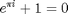

% Generate the axial contour model for the smooth bore rocket engine % combustion chamber. function engineContour ( s1, s2, s3, s4, s5, RC, RT, RE )
% Initialize function. clc; clf; % Sectional partitians. s0 = double ( 0.0 ); % Origin ( Injector face ). % s1 = double ( 1.0 ); % Injector. % s2 = double ( 6.0 ); % Combustion chamber. % s3 = double ( 10.0 ); % Neck. % s4 = double ( 12.0 ); % Throat. % s5 = double ( 14.0 ); % Nozel Adaptor. % Radii r0 = RC; % Combustion chamber radius. r1 = s1; % Injector bevel radius. r2 = r0 - r1; % Injector injection face. r3 = RT; % Throat radius. r4 = RE; % Nozel adaptor exhorst radius. % Derive contour function coeficients. y0 = r3; x0 = s3; x1 = s4; % y1, is the junction between the throat and the nozel adaptor, and is derived below. x2 = s5; y2 = r4; a0 = -(y0 - y2) / ((x0 - x1)*(x0 + x1 - 2*x2)); b0 = (2*x0*(y0 - y2)) / ((x0 - x1)*(x0 + x1 - 2*x2)); c0 = -(- y2*x0^2 + 2*x2*y0*x0 + y0*x1^2 - 2*x2*y0*x1) / ((x0 - x1)*(x0 + x1 - 2*x2)); a1 = (2*(y0 - y2)) / (x0 + x1 - 2*x2); b1 = (x0*y2 - 2*x2*y0 + x1*y2) / (x0 + x1 - 2*x2); y1 = (2*x1*y0 + x0*y2 - 2*x2*y0 - x1*y2) / (x0 + x1 - 2*x2); % Model geometric parameters. t = double ( 0.01 ); x0 = s0 : t : s1; x1 = s1 : t : s2; % Not used if we draw a horizontal line in stead of evaluating the function y = r0. x2 = s2 : t : s3; x3 = s3 : t : s4; x4 = s4 : t : s5; % Sectional contour functions. injector = r2 + sqrt (r1.^2 - (x0 - r1).^2 ); combustionChamber = r0; % Not used if we draw a horizontal line in stead of evaluating the function y = r0. neck = r3+(r0-r3)*(1 + cos ( (x2-s2)*pi/(s3-s2) ) ) / 2; Throat = a0*x3.^2 + b0*x3 + c0; nozzleAdaptor = a1*x4 + b1;

% Plot model. hold all; lineWidth = 2; margin = 2; plot ( [ s0-margin, s5+margin ], [ 0 ,0 ], 'LineWidth', 1, 'Color', 'k', 'LineStyle', '--' ); plot ( [ 0, 0 ], [ 0, r2 ], 'LineWidth', lineWidth, 'Color', 'k' ); plot ( [ 0, 0 ], [ 0, -r2 ], 'LineWidth', lineWidth, 'Color', 'k' ); plot ( x0, injector, 'LineWidth', lineWidth, 'Color', 'k' ); plot ( x0, -injector, 'LineWidth', lineWidth, 'Color', 'k' ); plot ( [ s1, s1 ], [ -r0 , r0 ], 'LineWidth', 1, 'Color', 'k', 'LineStyle', ':' ); plot ( [ s0, s1 ], [ r2, r2 ], 'LineWidth', 1, 'Color', 'k', 'LineStyle', ':' ); plot ( [ s0, s1 ], [ -r2, -r2 ], 'LineWidth', 1, 'Color', 'k', 'LineStyle', ':' ); circle ( r1, r2, r1, ':' ); circle ( r1, -r2, r1, ':' ); plot ( [ s1, s2 ], [ r0 , r0 ], 'LineWidth', lineWidth, 'Color', 'k' ); plot ( [ s1, s2 ], [ -r0, -r0 ], 'LineWidth', lineWidth, 'Color', 'k' ); plot ( [ s2, s2 ], [ -r0 , r0 ], 'LineWidth', 1, 'Color', 'k', 'LineStyle', ':' ); plot ( x2, neck, 'LineWidth', lineWidth, 'Color', 'k' ); plot ( x2, -neck, 'LineWidth', lineWidth, 'Color', 'k' ); plot ( [ s3, s3 ], [ -r3 , r3 ], 'LineWidth', 1, 'Color', 'k', 'LineStyle', ':' ); plot ( x3, Throat, 'LineWidth', lineWidth, 'Color', 'k' ); plot ( x3, -Throat, 'LineWidth', lineWidth, 'Color', 'k' ); plot ( [ s4, s4 ], [ -y1 , y1 ], 'LineWidth', 1, 'Color', 'k', 'LineStyle', ':' ); plot ( x4, nozzleAdaptor, 'LineWidth', lineWidth, 'Color', 'k' ); plot ( x4, -nozzleAdaptor, 'LineWidth', lineWidth, 'Color', 'k' ); plot ( [ s5, s5 ], [ -y2 , y2 ], 'LineWidth', 1, 'Color', 'k', 'LineStyle', ':' ); % Specify graphing parameters. axis ( [ s0-1, s3+1, -r0-1, r0+1 ] ); axis equal; set ( gca, 'XTick', s0-1 : 1 : s5+1 ); set ( gca, 'YTick', -r0-1 : 1 : r0+1 ); % Specify grid parameters. set ( gca, 'GridLineStyle', '-' ); set ( gca, 'XLim', [ s0-margin s5+margin ], 'YLim', [ -r0-margin r0+margin ] ); set ( gca, 'xcolor', [.8 .8 .8], 'ycolor', [.8 .8 .8] ); grid on;
end
Cannot find an exact (case-sensitive) match for 'EngineContour' The closest match is: engineContour in C:\Users\Rohin Gosling\Documents\MATLAB\Test\Vector Graphics\engineContour.m